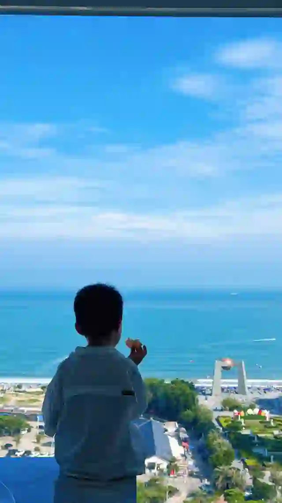
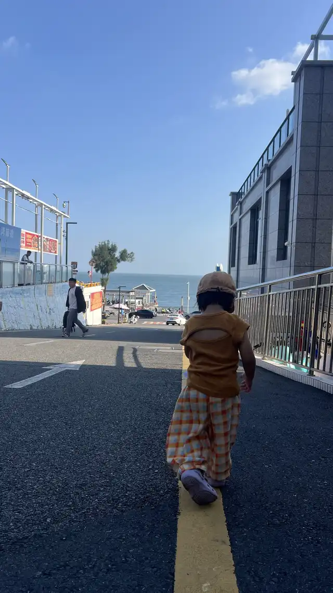
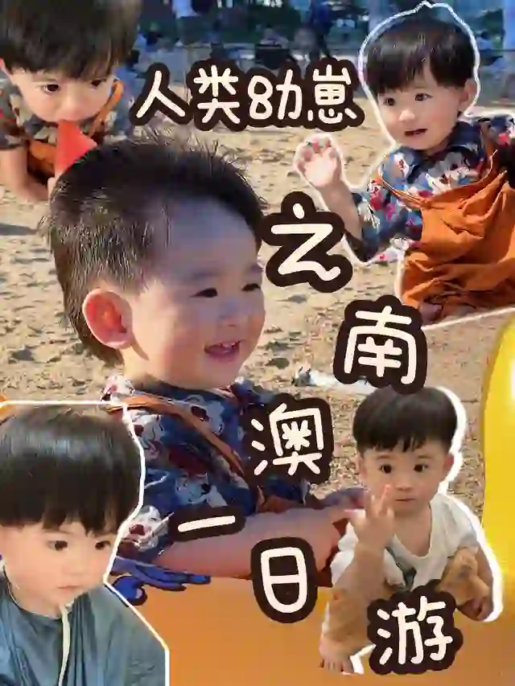
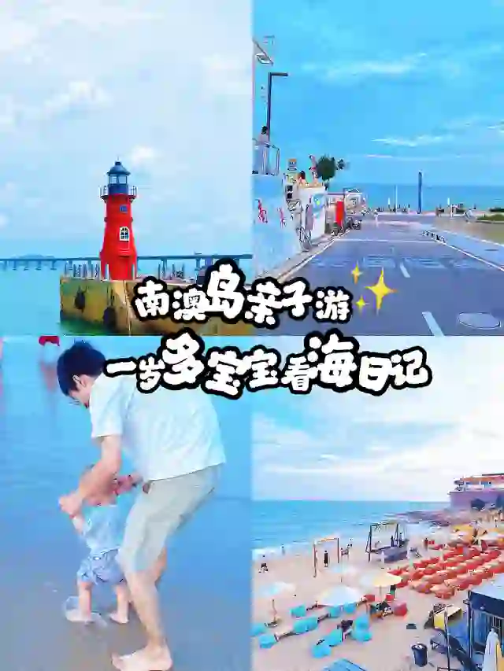
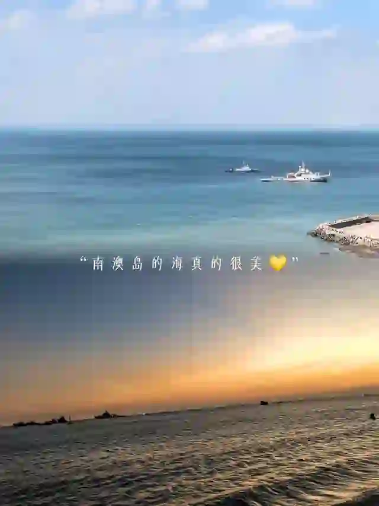

⤢
⤢
⤢
⤢
⤢南澳岛 / 青澳湾 / 长山尾灯塔
海岛和大桥出片极好，几乎所有潮汕三日攻略都会写。
这次不排：它在东线的最远端——先开完去莱美那段，再加一座跨海大桥。国庆桥上易堵，午睡回不了汕头那张床。东线额度已经给了莱美。另外汕头本地带娃笔记的说法很直接：「十辆车有九辆左拐去南澳」，但本地人自己对南澳评价一般，人多路远反而不如莱美好带娃。
以后：平日 2 天 1 夜住岛上，娃会走以后
小红书搜「南澳岛 带娃」↗